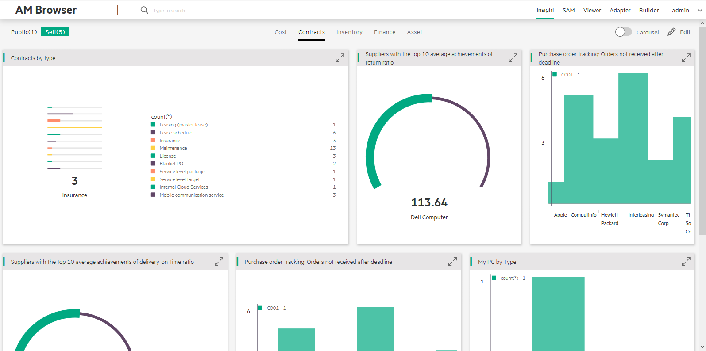
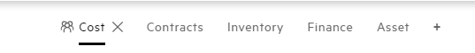
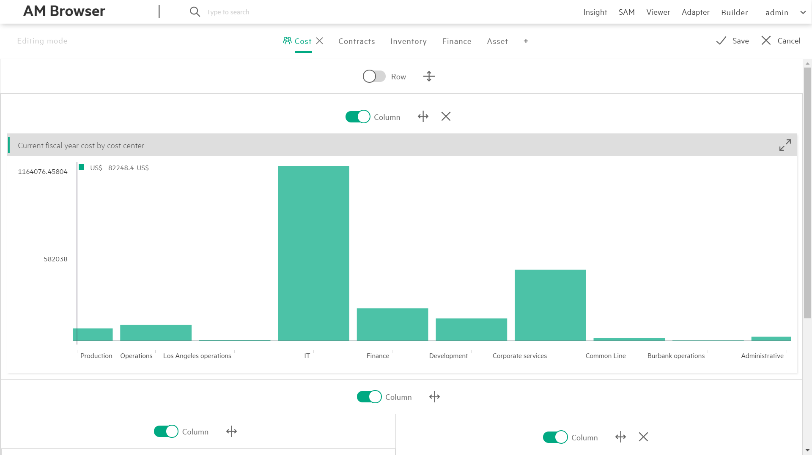

AM Browser Insight
Insight is a new type of report, Admin user and Power user can save their own reports.
Visible styles
There are two Visible styles:
- Public(default):
All users, have accessing rights to Insight module, accept a published graphs report called Overall from user Admin. All changes user Admin made for Overall graph report will be synchronized for other users. - Self:
Define your own graphs report. AM Browser allows you to attach or remove a graph from report, make a graph to be showed horizontally or vertically, bind two graphs in row and etc.
Display styles

There are two modes to present report:
-
Flat(default): Displays Graphs on a single page as per designed layout.
-
Carouse: Automatically displays Graphs one by one every 10 seconds.
(If interval of 10 seconds are too long to you, click arrow button switching to next graph manually.)
Carousel or not Carousel display the Graphs of the switch category.
Category

Based on your business requirement, you can create different category as tabs.
To create a new category, enable Edit mode and then click + button to add a new tab.
To rename a category, in the Edit mode, double click the tab name to enter a new name.
To remove a category, in the Edit mode, click X button.
Flexible layout
In the Edit mode, you can create a flexible layout. Each block can be split by row or column. You can attach a Graph in each separated sector.
- Split row
- Split column
- Attach a Graph
- Remove last element
Removing a function will remove its attached Graph or the last block. Block cannot remove itself.
Attach Graphs
In the Edit mode, you can attach a Graph to any block that does not have a sub block in layout.
Graphs are created in Graph module by AMB Admin.
Single Graph view
To review a graph with more details, click enlarge button  into expanding mode.
Within expanding mode, AM Browser shows you the graph with a table of records.
into expanding mode.
Within expanding mode, AM Browser shows you the graph with a table of records.
Graph Item view
Click each Graph item,get a Record list view to display this item with details.If continue click each record,will get a view about more details.
Example
Let's assume you want to have a view of annual cost of your company. To have that, you need to go to builder to create a graph first, and then follow steps below to have a report like below: 
1.Before attaching graph, please make sure the graph exists, and it is defined properly.
2.Decide where you want to put graph at, Public or Self. An existing category or create a new one.
3.Click Add tab to create a flexible layout.
4.Hit Attach a Graph button and select a Graph you want to attach.
5.Click Row or Column to change layout organization.
6.Click Save and confirm the modifications.